Part A: The Power of Diffusion Models
Part 0: Setup and Text Prompts
Random Seed: 100
Prompts: "an oil painting of a snowy mountain village", "a photo of the amalfi cost", "a photo of a man"
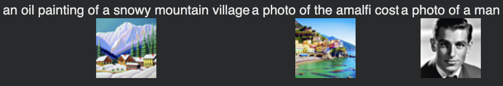
40 inference steps
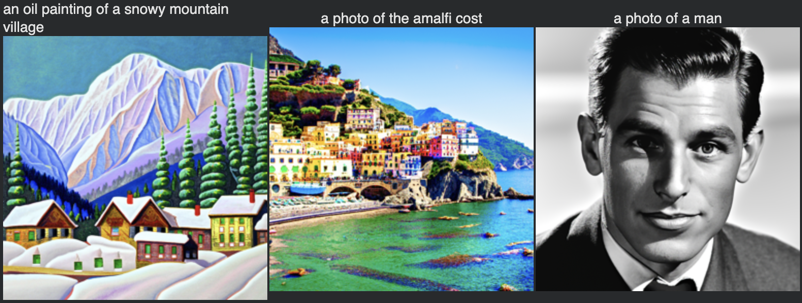
50 inference steps
With 50 steps, the details are sharper and the painting texture is more refined. The 50-step version shows clearer coastal details and better color saturation. Facial features are more coherent with 50 steps.
1.1 Implementing the Forward Process
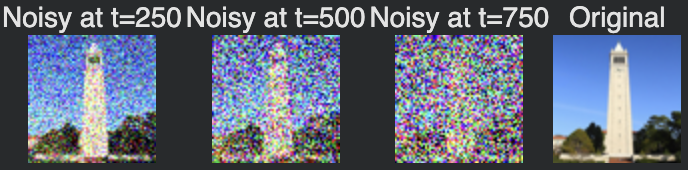
Forward process
1.2 Classical Denoising
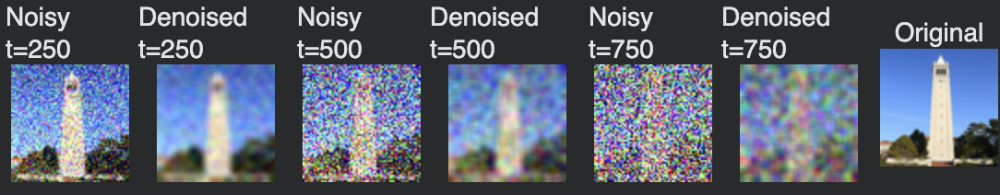
Classical denoising
1.3 One-Step Denoising
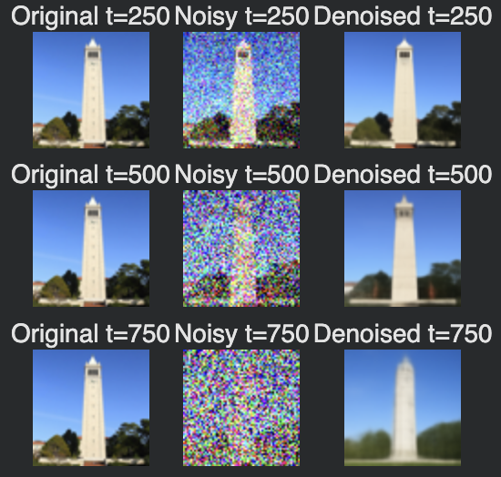
One-Step Denoising
1.4 Iterative Denoising
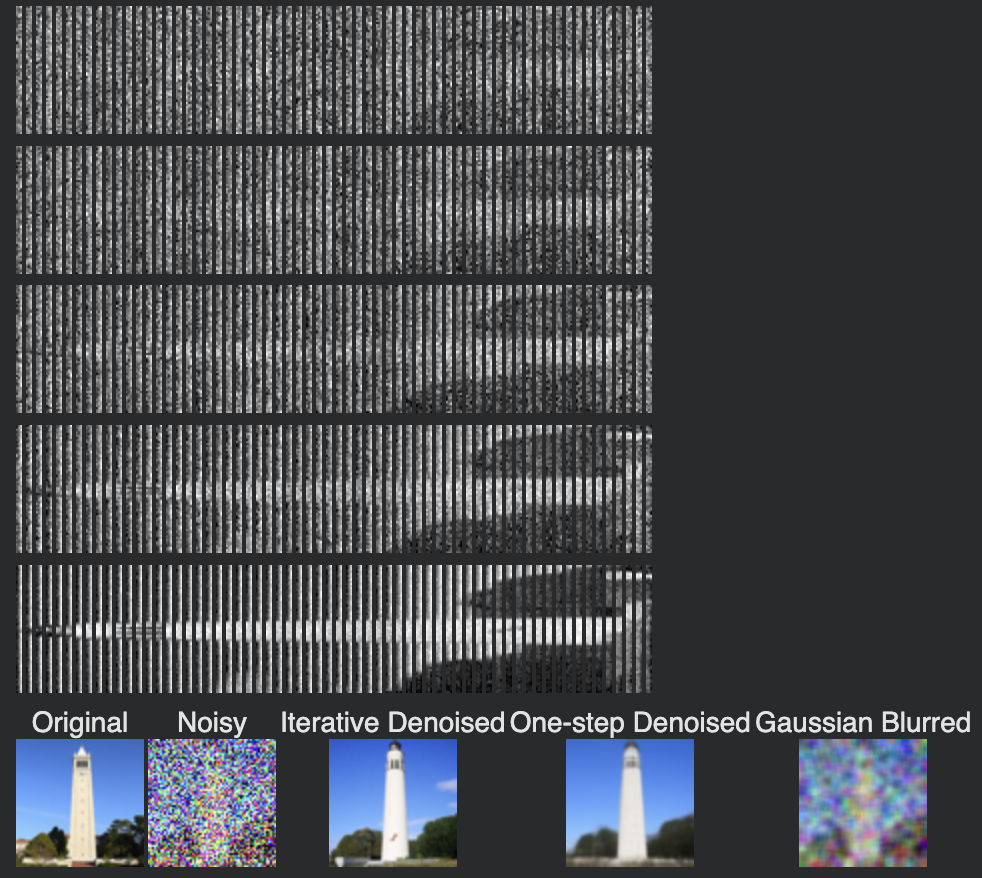
Iterative Denoising
1.5 Diffusion Model Sampling
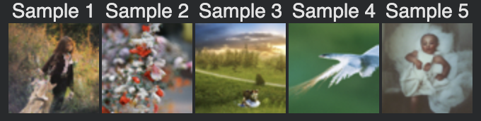
Diffusion Model Sampling
1.6 Classifier-Free Guidance (CFG)
CFG with different guidance scales
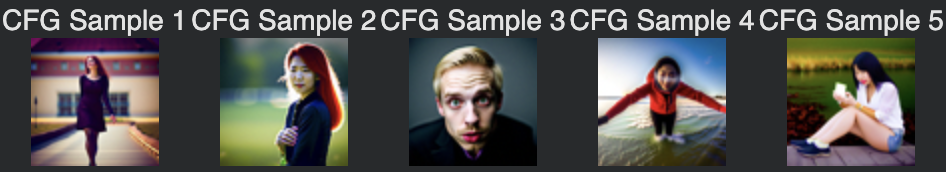
Classifier-Free Guidance
1.7 Image-to-Image Translation
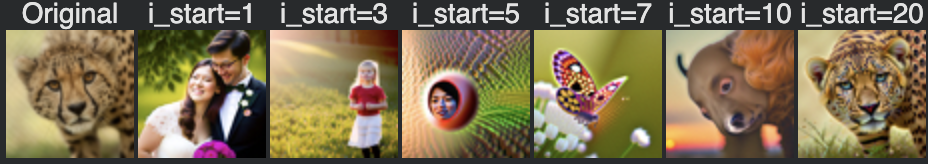
Self-choice 1
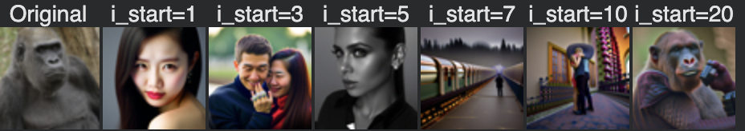
Self-choice 2
1.7.1 SDEdit: Projecting to the Natural Image Manifold
1.7.2 Inpainting
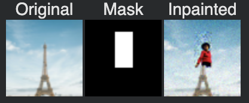
Self-choice 1
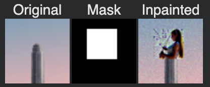
Self-choice 2
1.7.3 Text-Conditioned Image-to-Image Translation
Campanile Translation: "a rocket ship"
Custom Image 1: "a lithograph of a skull"
Custom Image 2: "a lithograph of waterfalls"
1.8 Visual Anagrams
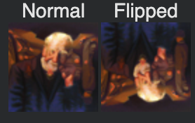
"an oil painting of an old man"&"an oil painting of people around a campfire"
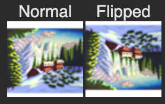
"an oil painting of a snowy mountain village"&"a lithograph of waterfalls"
1.9 Hybrid Images
Hybrid 1
(Low freq: "an oil painting of an old man", High freq: "an oil painting of people around a campfire")
Hybrid 2
(Low freq: "a lithograph of a skull", High freq: "a lithograph of waterfalls")
Part B: Diffusion Models from Scratch
Part 1: Training a Single-Step Denoising UNet
1.2 Using the UNet to Train a Denoiser
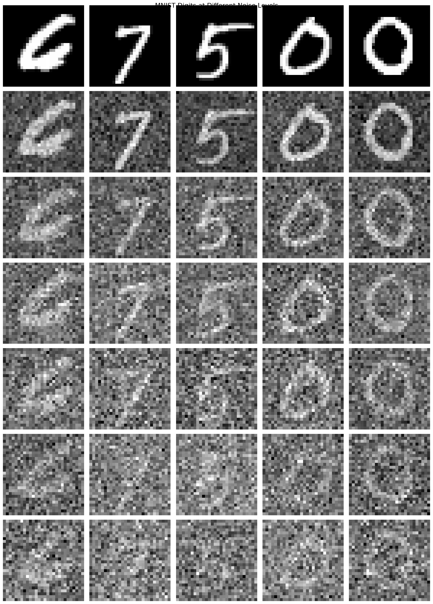
Noising process
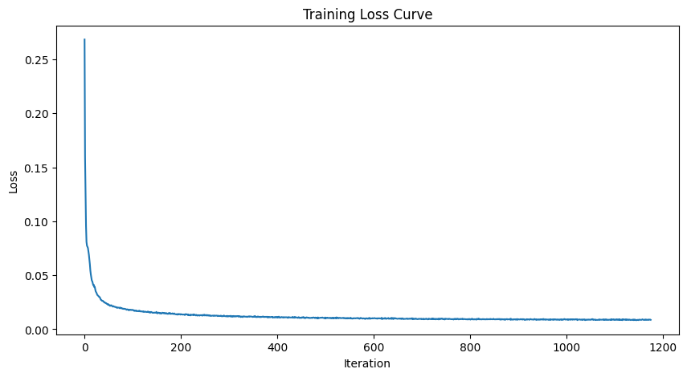
Training Loss Curve
Results after Epoch 1 and Epoch 5
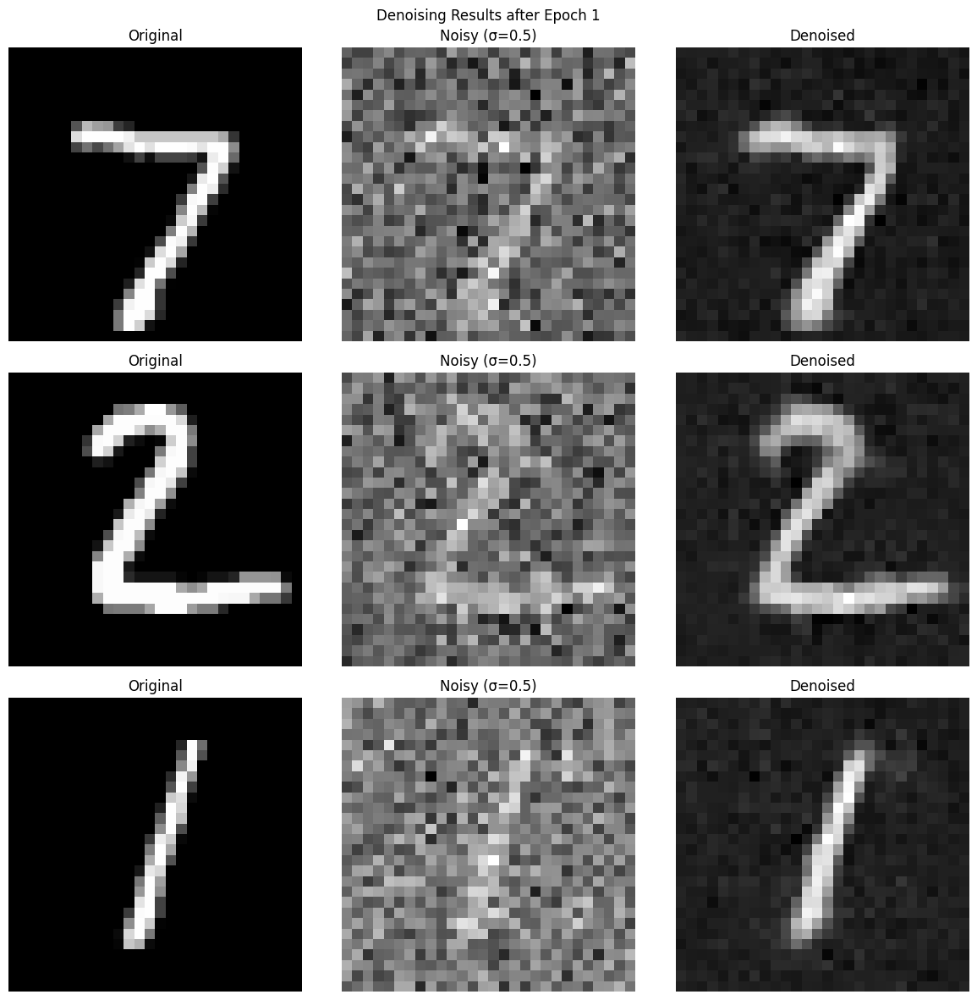
Denoising Results - Epoch 1
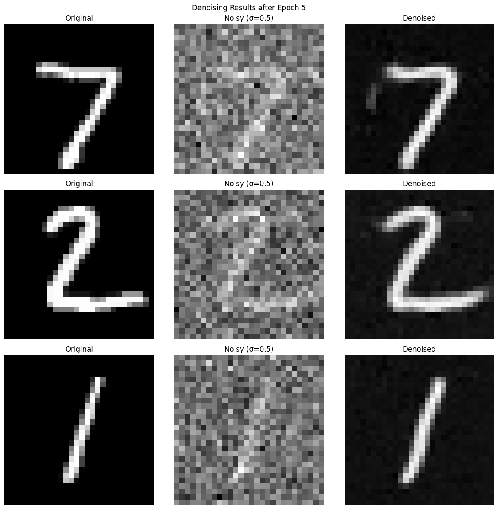
Denoising Results - Epoch 5
1.2.2 Out-of-Distribution Testing
Part 1.2.3: Denoising Pure Noise
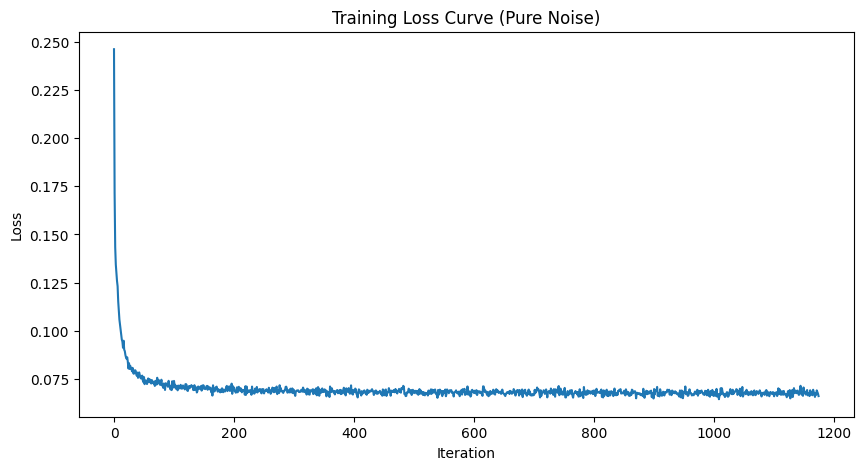
Training Loss Curve
Results after Epoch 1 and Epoch 5
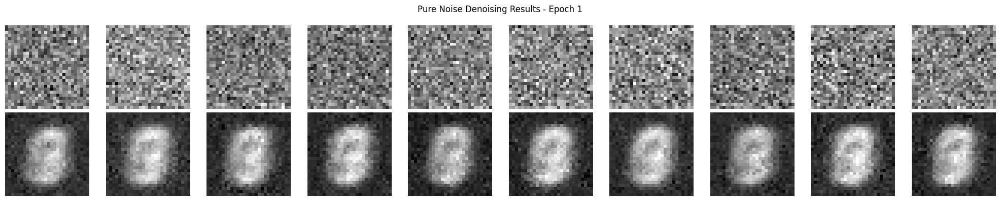
Denoising Pure Noise - Epoch 1
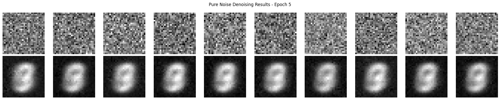
Denoising Pure Noise - Epoch 5
The generated outputs show blurry, averaged digit-like shapes rather than clear individual digits.
This occurs because with MSE loss, the model learns to predict the mean of all training examples.
Since the input is pure noise with no structure, the network outputs something close to the average
of all MNIST digits it was trained on.
Part 2: Training a Diffusion Model
2.2 Training the Time-Conditioned UNet
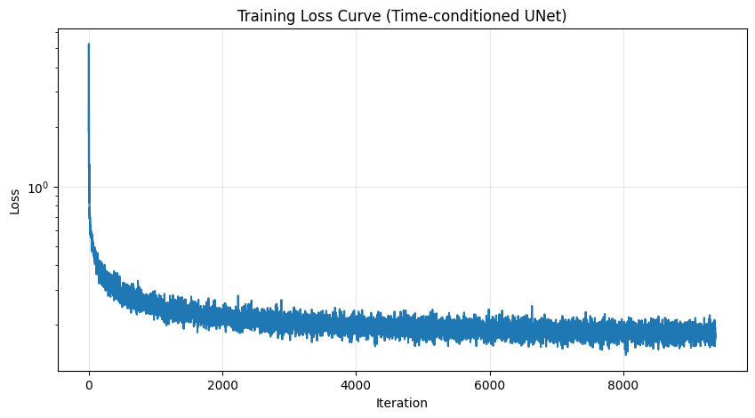
Training Loss Curve (20 epochs)
2.3 Sampling from the Time-Conditioned UNet
2.5 Training the UNet
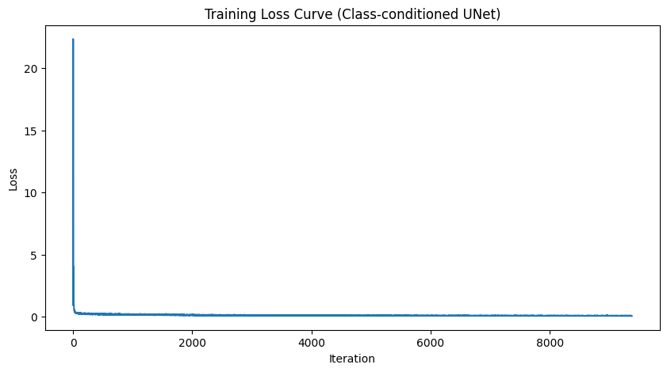
Training Curve
2.6 Sampling from the UNet
Removing the Learning Rate Scheduler
Successfully maintained model performance after removing the exponential learning rate scheduler by:
- Using a constant learning rate of 1e-3 (optimized through experimentation)
- Increasing the number of training epochs to compensate
- Adding gradient clipping to prevent instabilities
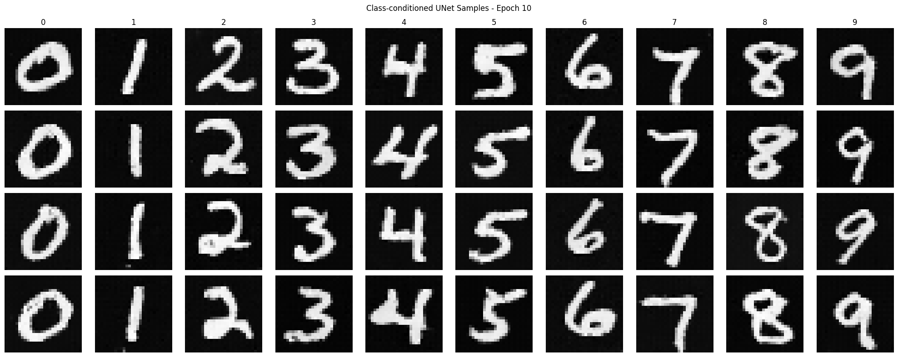
Results without LR scheduler (Epoch 10)